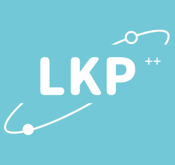

|
Dongchen Xie
I am a graduate student at the School of Information at Renmin University of China, supervised by Associate Professor Wei You at the Smart Software Security Research Group. Previously, I obtained my bachelor's degree from the School of Information and Software Engineering at the University of Electronic Science and Technology of China, with a GPA of 3.96/4.00.
At RUC, I've worked on Linux Kernel Security.
Email /
CV /
Github
|
|
Research
I'm interested in kernel security. My research is about linux kernel vulnerability exploitation.
|
|
|
Design for Extending iSula with a Software-Defined Network Emulator
Dongchen Xie, Beichuan Zhang, Jinhao Zhang
Huawei Open Source Software Supply Chain, 2021
We design a virtual network emulator based on iSula containers, achieving unified management of virtual node clusters with the ONOS controller, and providing a virtual LAN environment for Huawei's experimental platform.
|
|
|
SDN Campus Network Intrusion Detection and Defense System
Dongchen Xie, Beichuan Zhang
C4-Network Technology Challenge, 2021
We utilize the lower-layer P4 and upper-layer deep learning for detecting incoming traffic, and issue flow tables according to pattern matching rules. By leveraging the characteristics of the SDN network, implement campus network intrusion monitoring, which can intercept more than 94% of malicious traffic.
|
|

|
lkp-extent
Dongchen Xie, Dengzhi Wu
Tencent OpenCloudOS, 2022
We add stress-related testing of Intel's open-source project LKP in a container environment to enhance the RAS (Reliability, Availability, and Serviceability) features of the Linux system. Primarily used to extend the functionality of LKP, it addresses the shortcomings of its multi-point parallel testing by designing a one-to-many operational mode.
|
Feel free to steal this website's source code. Do not scrape the HTML from this page itself, as it includes analytics tags that you do not want on your own website — use the github code instead. Also, consider using Leonid Keselman's Jekyll fork of this page.
|
|
{kind=link}